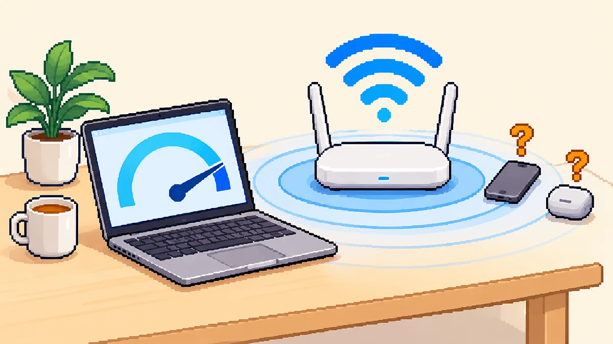

Быстрый Wi-Fi с Claude Code и Codex
ИИ найдёт, что тормозит Wi-Fi, и покажет, кто сидит в твоей сети

Шаги ниже подстроятся под твой выбор
Начни здесь · 15 минут
Один промпт, и ИИ проведёт по всем шагам
Он сам проверит сеть, предложит исправления и покажет устройства. Перед каждым изменением спросит тебя
- Скопируй
- Открой Claude CodeCodex
- Вставь и отправь
План · 4 шага
Что понадобится
- Компьютер в домашнем Wi-FiWindows 10, 11 или Mac, подключённый к сети, которую ускоряем
- Подписка Claude Pro или вышеНа бесплатном тарифе Claude Code нет
- Любой аккаунт ChatGPTДаже бесплатный: Codex входит во все тарифы
- Пароль от настроек роутераОбычно он на наклейке снизу или сзади роутера
Что важно знать
- Пароль вводишь ты самНа странице роутера. В чат его не пиши
- ИИ спрашивает перед изменениямиВ режиме Manual Claude спрашивает разрешение перед каждой командой, которая что-то меняет
- ИИ спрашивает перед изменениямиВ режиме Ask for approval Codex спрашивает, прежде чем выйти в интернет или поменять файлы вне папки. Остальное запрещает промпт
- Ничего не ставится без спросаЕсли для замера нужна программа, ИИ сначала спросит
- Интернет может пропасть на минутуКогда меняются настройки роутера. Это нормально
Шаг 1 из 4
Открой Claude Code
- Code
- Local
- Open folder…
- Manual
- Скачай приложение Claude на claude.com/download и войди
- Нажми вкладку Code вверху боковой панели
- Под полем ввода выбери Local, потом Open folder… и пустую папку home-wifi
- Там же выбери режим Manual
Через терминал, если привык
irm https://claude.ai/install.ps1 | iexcurl -fsSL https://claude.ai/install.sh | bashclaudeШаг 1 из 4
Открой Codex
- Codex
- Папка home-wifi
- Ask for approval
- Скачай приложение ChatGPT для компьютера на официальной странице и войди своим аккаунтом ChatGPT
- Выбери Codex в выпадающем списке ChatGPT
- Открой пустую папку home-wifi
- Под полем ввода выбери Ask for approval
Шаг 2 из 4
Найди, что тормозит Wi-Fi
- Твой компьютерЗдесь ИИ запускает команды и смотрит, кто качает в фоне
- РоутерИИ находит его адрес и меряет скорость
- Сети соседейНа каком канале и мешают ли твоей
Отправь ClaudeCodex первый промпт
Из ролика: три соседа на том же канале, что и ты
Подробнее про замер скорости
Шаг 3 из 4
Исправь по одному и замерь снова
СоветСоглашайся по одному. Так видно, какое исправление помогло, и его легко вернуть, если стало хуже
Настройки роутера
Пароль обычно на наклейке. Вводи его сам, на странице роутера
Подробнее про исправления
Когда исправления закончатся
Пример замера
Цифры у тебя будут свои. Быстрее тарифа провайдера не будет
Шаг 4 из 4
Проверь, кто сидит в твоей сети

Это трюк для приватности. Отправь второй промпт
ИИ покажет примерно такой список
- Этот компьютер192.168.0.12мой
- Телефон192.168.0.18мой
- Телевизор192.168.0.24мой
- Приставка192.168.0.31мой
- Неизвестное устройство192.168.0.57незнакомое
- Неизвестное устройство192.168.0.63незнакомое
Пример. Самый полный список обычно на странице роутера, ИИ может открыть её сам
Незнакомое не всегда чужоеiPhone с iOS 14, Mac с macOS 15 и телефоны с Android 10 подключаются со случайным адресом, своим для каждой сети. Поэтому и твой телефон может выглядеть незнакомым
Если нашлись чужие
Из ролика: свои отмечаешь, остальные можно заблокировать
Подробнее про новый пароль
Как это выглядит в чате
Здесь видно, какие команды ИИ запускает на твоём компьютере. Выбери ситуацию над окном
Найти роутер и замерить скорость
Ответы примерные, у тебя ИИ скажет своими словами
Все промпты в одном месте
Готово. Ты знаешь, что тормозило Wi-Fi, и кто к нему подключён
Если что-то пошло не так
Стало хуже, чем было
Напиши ИИ «Верни последнее изменение, как было». Изменение на роутере возвращается на той же странице настроек, ИИ подскажет где
Пропал интернет и не возвращается
Подожди пару минут, роутеру нужно время после смены настроек. Не помогло, перезагрузи роутер: выключи его из розетки, подожди 30 секунд и включи. Через пару минут Wi-Fi вернётся
Пароль с наклейки не подходит
Значит, его уже меняли. Вспомни пароль или спроси того, кто настраивал роутер. Сброс к заводским настройкам может стереть и настройки интернета, поэтому без провайдера его не делай
ИИ пишет, что Windows не даёт список сетей Wi-Fi
С осени 2024 года Windows показывает соседние сети только программам с доступом к местоположению. Открой Параметры, раздел «Конфиденциальность», затем «Расположение». Включи доступ к местоположению и «Разрешить классическим приложениям доступ к вашему местоположению»
Скорость не выросла
Сравни замер с тарифом провайдера. Если скорость сильно ниже тарифа даже рядом с роутером, позвони провайдеру и спроси, нет ли сбоя на линии
Вкладка Code просит оплату
Claude Code работает на тарифе Pro и выше. Без подписки выбери вверху страницы Codex, он есть даже в бесплатном ChatGPT
ИИ спрашивает разрешение выполнить команду
Так и должно быть: он показывает команду до запуска. Не понял, что она делает, спроси «Что делает эта команда?»